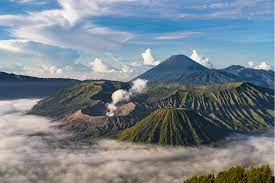

Java

Java is between Sumatra and Bali, it's a volcano-dotted island that’s at the geographic and economic center of Indonesia, and home to more than half it's people.
Jakarta is the capital of Indonesia. Jakarta is one of the oldest continuously inhabited cities in Southeast Asia, established in the fourth century as Sunda Kelapa, the city became an important trading port for the Sunda Kingdom. At one time, it was the de facto capital of the Dutch East Indies, when it was known as Batavia. Jakarta was officially a city within West Java until 1960 when its official status was changed to a province with special capital region distinction.
Bali is indonesia's most famous island, it is located to the west of Java in the Lesser Sunda Islands. It is world-renowned for its scenic rice terraces, fragrant cuisine, stunning beaches and a galore of culture and tradition.
Java is between Sumatra and Bali, it's a volcano-dotted island that’s at the geographic and economic center of Indonesia, and home to more than half it's people.